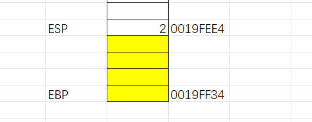

0x01 堆栈平衡
#include<stdio.h>
int Hello(int a, int b){
return a+b;
}
int main(){
int a = 1;
int b = 2;
Hello(a,b);
return 0;
}上述写的简单的C程序，我们先找寻一下main函数入口，这里毕竟我也是菜鸡，看了几篇文章感觉还是不太会找入口，于是又想着用IDA打开找main函数，果不其然找到了
我们在dgb对应地址上打个断点运行到main函数位置，运行到此处。
这里又找到了滴水逆向的课件，于是我想着直接换成自带的helloworld.exe来画堆栈图
至于为何是图中的地址，这里也是跟着教程走的，没别的原因。先记录一下esp与ebp寄存器地址（记得点断点之后运行到此处）
EBP为栈底，ESP为栈顶，接着我们F8步走。这个黄色就代表了，在我们调用之前，你原始的堆栈就是这样的，这里面的数据是在我的程序在执行之前就已经被占用的了
可以看到栈底未变化，栈顶发生了变化（-4），这里是由于我们push 2这一步的原因
右下角也可以看到2的产生，这代表2已经写入堆栈中了，这一过程叫做压栈。

再F8步走一下，如下图1也成功入栈，地址也发生变化
接着下一步就不能直接F8了，因为这回的指令为call，适用于调用函数的，如果直接F8，就到了add esp的一步，而我们是想要进入这个函数内部的，因此这里需要F7步进，call函数左后肯定会对应一个ret（用于终止当前函数的运行，即回收当前函数的帧）。这里看到教程说，call这个函数修改EIP值的同时，还会将这行指令的地址压入栈中。
地址值：EIP+指令长度
这里也不是很清楚指令长度代表多少，不过倒是可以计算器算出来。。。
这里与上图比较看到ESP又-4，当我们再提到函数的返回地址，说的就是call调用的时候，栈里面被压入的值。
这里也可以看到其中含有JMP指令：无条件转移到标号为label的位置。也就是跳转指令，跳转到指定位置。这里看的教程说是不需要理他，直接回车就行。
这里回车后再看一下EIP的值，我们与上面比较的话会发现，这个值与call调用的时候的地址一样，这里教程说是JMP相当于mov值给EIP，故此EIP的值会变化。接着我们老规矩F8。
这里可以看到在push EBP之后，ESP的值又-4，同时我们可以看到右下角栈顶的值就是当前EBP的值。
这里继续F8看到上图在mov EBP， ESP之后看到右上角发现，EBP=ESP（本质意义就算是栈底提高了）
同时我们发现下一步的sub esp,40，依据上图的解释这里不难看出，我们esp的值-40，由于40是十六进制，所以相当于十进制的16，故此要上升16格。
之后我们F8来核对一下我们计算是否正确：
如上图，发现esp的值与我们画的堆栈图是一致的。这里介绍一下缓冲区的概念：
缓冲区的概念：任何一段程序在执行都需要一点空间，不给我一块内存怎么执行，所以需要一块空间叫做缓冲区，缓冲区的大小时不确定的，他会根据你需要的多少来分
上图是PUSH EBX的结果。在这里附上文章的解释：
为什么程序要这么设计：因为你让CPU干活，让他去执行一段功能，我们需要给他分一块内存，所以上面为什么有一条SUB ESP，40这个原因，为什么还有一堆PUSH EBX ESI EDI这些东西，我们要执行一段程序，如果说我们现在在玩游戏，一共30关现在玩到了29关，现在突然想起来我要去吃饭，吃饭就相当于我要执行另外一段程序，如果你吃完饭回来发现你要从第一关开始你干不干，所以一样的道理，所以这些寄存器一共就这些个，在我们用之前是不是我们需要把他保留起来，等我们执行完了，我们再还原回来，所以PUSH 那三个寄存器的步骤我们可以理解为保存现场，寄存器里面存的值保存到哪里去，我们再编程的时候，就两个地方可以保存进去，一个是寄存器，一个是内存，那保存到哪个内存里面，那么正好是我们现在用的堆栈这里我们执行一下push ebx与edi，那根据计算我们push之后，esp的值应该以E8C结尾
接着我们验证一下，如下图验证成功，ebx，edi成功入栈（可以看到右下角的栈中含有上面EDI,EBX的地址值）
这里修改一下上面的堆栈图（有所错误），如下图，我们的EBP是在前几步已经变了的，我这里忘记改了。
LEA是取地址编号的，取EBP-40这块的地址编号然后放到EDI里面，这里经过计算呢，我们的EDI的值应该是以FE98结尾的，我们F8验证一下
可以看到验证成功，但再细看一下发现其他寄存器的值如EBP，ESP的值并未发生变化。
说明LEA只是单纯改变EDI的值。
接下来分析：
MOV ECX,10
MOV EAX,CCCCCCCC
REP STOS DWORD PTR ES:[EDI]但这里不知为何，这里的代码与上述图中不符，问了GPT发现功能是相同的，但使用的命令不一样罢了
是的，这两者在功能上是相同的。
1. `REP STOS DWORD PTR ES:[EDI]` 中的 `STOS` 是存储字节或双字节的指令，而 `DWORD PTR` 表示操作数是一个双字（32位）。
2. `REP STOSD` 中的 `STOSD` 也是存储双字节的指令，其中 `D` 表示双字。
因此，这两者都是重复执行相同的存储操作，只是指定的方式略有不同。前者使用了显式的地址表示（`DWORD PTR ES:[EDI]`），而后者直接使用默认的寄存器（`STOSD`）。在实际使用中，选择哪个取决于具体的需求和编程上的偏好。这里看wp说是REP会受到ECX的影响，ECX的值是多少REP就执行几次，这里是执行16次，因为10是十六进制
这里呢，先是将ECX赋值为10，其次将EAX赋值为CCCCCCCC，这里STOS的作用是：
将EAX的值赋值给EDI这个地址编号指向的内存，这个里面的EDI会自动加4或者减4，这是有D位决定的，D位为0就是加（不过对于这个解释没太懂）。而这三条命令加起来意思就是：每次将EAX这一串CC放入EDI所指向的地址，共操作16次，但每次放入之后EDI会+4，+4后ECX会自动-1，CC相当于init3，相当于断点，防止缓冲区溢出。
那我们分析一下堆栈图，在上面的我们知道EDI当前地址为0019FE98，也就是下图
那这里需要操作16次，也就是我们从E98那里开始一直到EBP的上面一格，共16格，都将会成为CC这一串字符
最终结果如上图，接下来我们验证一下上述的讨论
如上图，这里是未变化之前，如下图，可以看到，在94一直到D8之间的都变成了CC，验证成功
MOV EAX，DWORD PTR SS：[EBP+8]
ADD EAX，DWORD PTR SS：[EBP+C]上述代码含义为，取EBP+8所得到的地址的值，赋值给EAX，接着取EBP+C得到的地址的值，与EAX的值相加，赋值给EAX
我们根据上述的堆栈图，可以看到EBP+8就是1，EBP+C就是2，所以上述步骤的含义就是EAX=1+2=3
接着我们F8验证一番
可以看到上图右上角EAX变为3，紧接着是pop edi，pop esi，pop ebx

对应于堆栈图，这里就是将EDI，ESI，EBX的值放到寄存器中
堆栈图如上，验证如下：

如上图我们看到ESP的值成功-12到E98的值
随后又mov esp，ebp，这里是将ebp的值赋值给esp，也就是上述堆栈图中的CC一串数据没了，堆栈图如下：
验证如下：
可以看到ESP与EBP的值一致（这个过程叫做恢复堆栈），至于函数执行完在堆栈里面的值就不要了，所以就会产生数据垃圾
这里做一下修改，因为CC这串垃圾数据是依旧存在的，所以堆栈图应该是这样的：

如上图，可以看到CC一串数据依旧存在，最后是pop ebp，将ebp出栈
执行完我们看到上图中EBP的值恢复原样，恢复了原来的栈底（可以对比文章开头的）
最后进行了ret，不过看其他文章这里是RETN，其本质是pop eip，也就是我们最开始call调用函数的地方，即将eip的值出栈，eip：401171，这个地址就是我们的函数返回地址，这里执行完之后，堆栈图应该如下：
验证如下：
上图所示，EIP的值恢复了4001171，到目前为止我们就达到了堆栈平衡：
堆栈平衡：调用函数之前和调用函数之后你的堆栈应该是一样的，是没有变化的，我们叫做堆栈平衡ADD ESP，8 我们在外面维持了堆栈平衡，我们把这个叫做外平栈。
完结撒花！
0x02 还原C代码
这里逆向的师傅给了我一个小练习，将汇编指令还原为C代码，内容如下：
;test1
.text:000011B1 var_4= dword ptr -4
.text:000011B1 arg_0= dword ptr 8
.text:000011B1 55 push ebp
.text:000011B2 89 E5 mov ebp, esp
.text:000011B4 83 EC 10 sub esp, 10h
.text:000011C1 C7 45 FC 00 00 00 00 mov [ebp+var_4], 0
.text:000011C8 83 7D 08 00 cmp [ebp+arg_0], 0
.text:000011CC 79 09 jns short loc_11D7
.text:000011CC
.text:000011CE C7 45 FC 01 00 00 00 mov [ebp+var_4], 1
.text:000011D5 EB 34 jmp short loc_120B
.text:000011D5
.text:000011D7 loc_11D7:
.text:000011D7 83 7D 08 00 cmp [ebp+arg_0], 0
.text:000011DB 75 09 jnz short loc_11E6
.text:000011DB
.text:000011DD C7 45 FC 02 00 00 00 mov [ebp+var_4], 2
.text:000011E4 EB 25 jmp short loc_120B
.text:000011E4
.text:000011E6 loc_11E6:
.text:000011E6 83 7D 08 1D cmp [ebp+arg_0], 1Dh
.text:000011EA 7F 09 jg short loc_11F5
.text:000011EA
.text:000011EC C7 45 FC 03 00 00 00 mov [ebp+var_4], 3
.text:000011F3 EB 16 jmp short loc_120B
.text:000011F3
.text:000011F5 loc_11F5:
.text:000011F5 83 7D 08 45 cmp [ebp+arg_0], 45h
.text:000011F9 7F 09 jg short loc_1204
.text:000011F9
.text:000011FB C7 45 FC 04 00 00 00 mov [ebp+var_4], 4
.text:00001202 EB 07 jmp short loc_120B
.text:00001202
.text:00001204 loc_1204:
.text:00001204 C7 45 FC 05 00 00 00 mov [ebp+var_4], 5
.text:00001204
.text:0000120B loc_120B:
.text:0000120B 8B 45 FC mov eax, [ebp+var_4]
.text:0000120E C9 leave
.text:0000120F C3 retn
;main
.text:00001221 6A 3C push 3Ch
.text:00001223 E8 85 FF FF FF call test1
.text:00001228 83 C4 04 add esp, 4这里只要我们在画堆栈平衡中用心了，看这里也不会费事的，遇到不常用的指令搜索即可。
首先我这里的思路就是先找main函数入口，如上图所示。那第一步这里是push 3Ch。也就是3Ch入栈，这里的h代表十六进制而已。
之后call指令调用test1函数，那我们接下来找寻test1的入口

如上图，前面两个指令我专门问了一下GPT：
var_4= dword ptr -4
arg_0= dword ptr 8在汇编语言中，dword ptr 表示 “double word pointer”，表示一个双字（32位）指针。而 -4 和 8 是相对于基址指针 ebp 的偏移量。
-
var_4= dword ptr -4表示在当前堆栈帧中，var_4是一个双字（32位）变量，相对于基址指针ebp的偏移量为 -4。这意味着在堆栈上，var_4存储在ebp - 4的位置。 -
arg_0= dword ptr 8表示在当前堆栈帧中，arg_0是一个双字（32位）参数，相对于基址指针ebp的偏移量为 8。这意味着在堆栈上，函数参数arg_0存储在ebp + 8的位置。
总体来说，这两个定义告诉我们在函数的堆栈帧中如何访问 var_4 和 arg_0 这两个变量。
基于上述阐述，我们不难理解，这里的var_4与arg_0的地址一定是EBP当前的地址-4与+8。
之后的这两个步骤意思是，将当前esp的值赋值给ebp，也就是说此刻，ebp（也就是栈底）减少了，减少至与esp位置一致。
而sub指令则是进行esp-10h的操作，在这里10是十六进制，那10进制就是16，也就是将esp进行-16，那到这里ebp与esp便不再同一位置，那他们之间的距离则是为了在下面程序执行时，分配内存空间的作用（这里我们在上面堆栈图也学习过）即缓冲区。
接下来的
这里的意思是，将0赋值给var_4也就是ebp偏移量为-4的位置，即此刻var_4的值为0
这里我们搜索一下cmp指令的含义：
cmp是比较指令，cmp的功能相当于减法指令，只是不保存结果。cmp指令执行后，将对标志寄存器产生影响。其他相关指令通过识别这些被影响的标志寄存器位来得知比较结果。
cmp 指令格式：
cmp 操作对象1, 操作对象2功能：
操作对象1 - 操作对象2计算操作对象1 - 操作对象2但并不保存结果，仅仅根据计算结果对标志寄存器进行设置。
也就是说这里的cmp是将arg_0与0进行比较
这里我们需要结合jns指令来看，先理解一下jns指令含义：这里我感觉是写错了，搜了几篇文章发现jns是当非负数的时候即可跳转
也就是说如果我们arg_0>=0（为非负数）则执行下列的jns命令跳转到jns所指定的目标地址上，如上图所示也就是11D7位置。
若我们的arg_0<0，那var_4则会被赋值为1，之后继续跳转到指定位置：120B；若我们成功执行jns指令，那我们则会继续执行arg_0与0的比较
在jnz指令作用下，如果我们的arg_0!=0，则会跳转到指定位置11E6，否则var_4则会被赋值为2，接着跳转到指定位置：120B；
地址11E6：
如上图所示，在11E6处进行了arg_0与1Dh的比较，
那如果我们此时arg_0>1Dh则会跳转到jg指定位置：11F5，否则将var_4赋值为3，接着跳转到120B。
这里呢在11F5处，依旧是如果arg_0>45h，则跳转到指定位置：1204，否则将var_4赋值为4，接着跳转到120B。
最后在1204地址处，直接将var_4赋值为5，接着执行leave，retn。
这里呢问了GPT说是，leave作用是恢复先前的堆栈帧，retn则是返回到当初call指令调用地址处
最后add esp，4，也就是esp=esp+4，这里也就是为了将使用过的字节（内存空间）全部回收，清理堆栈。
综上所述，我们尝试编写一波C代码：
#include<stdio.h>
int test1(int a){
int var_4 = 0
if(arg_0 < 0){
var_4 = 1;
}
else if(arg_0 == 0){
var_4 = 2;
}else if(arg_0 <= 1Dh){
var_4 = 3;
}else if(arg_4 <= 45h){
var_4 = 4;
}else{
var_4 = 5;
}
return var_4;
}
int main(){
test1(3Ch);
return 0;
}不过与原函数对比发现，这里似乎变量的名字我们无法得知，另外就是
0x03 总结
这次堆栈平衡花了三天时间，但前两天各种琐事以及软件配置问题导致我迟迟没有开始，今晚好不容易有了时间，就花了2小时完成。
总的来说困难不是很大（或许是我跟着教程走的缘故吧）不过还是很有收获的，回顾之前发布的汇编指令那一篇文章，了你给我头疼不已，虽然大概可以看懂，但还是缺了很多东西，这回也是在reverse方向师傅的建议下，尝试画堆栈图，这似乎让我收获很大。